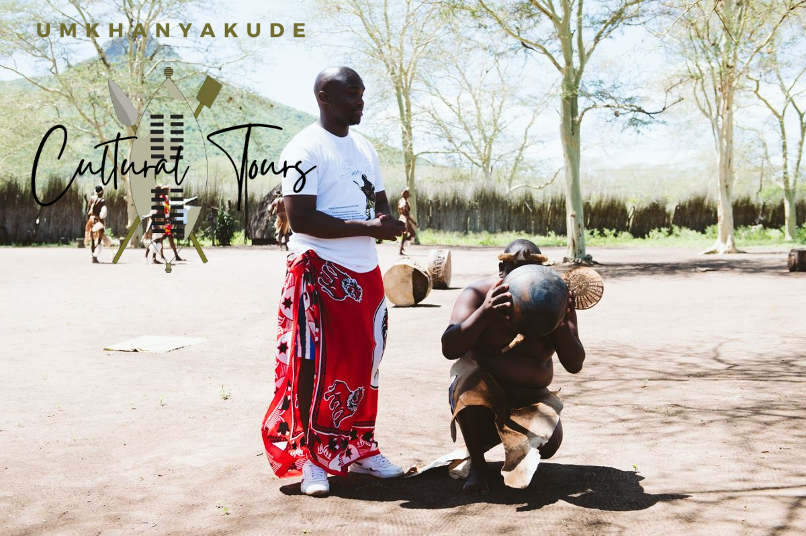
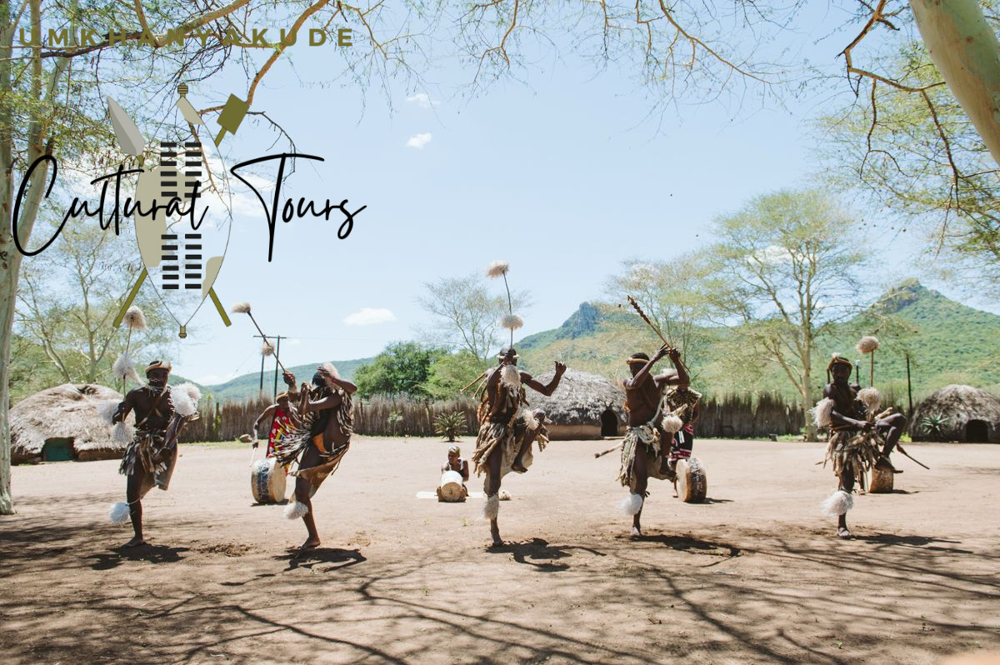
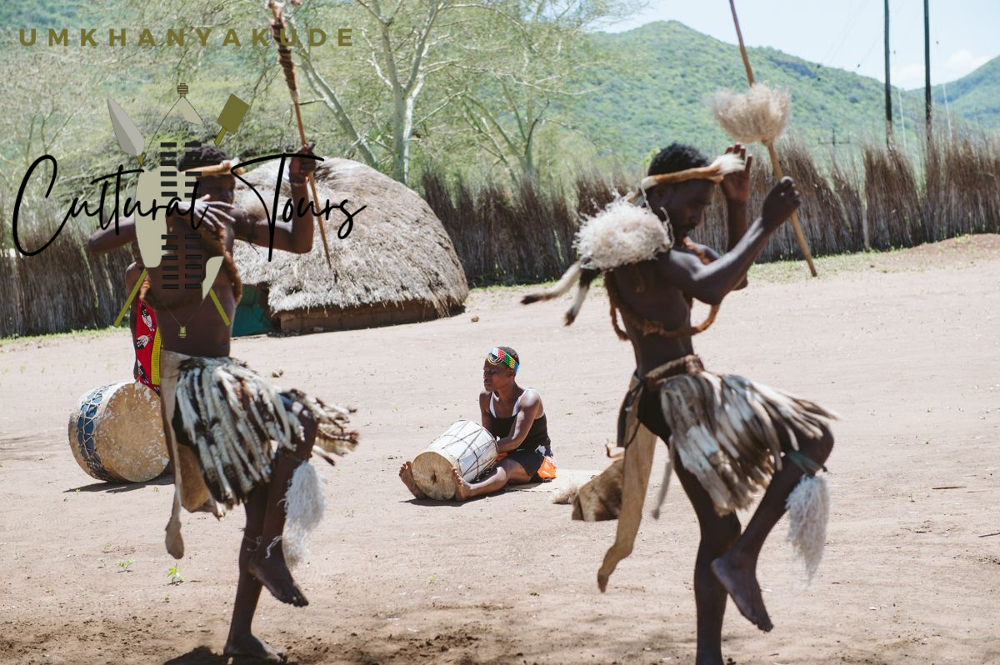
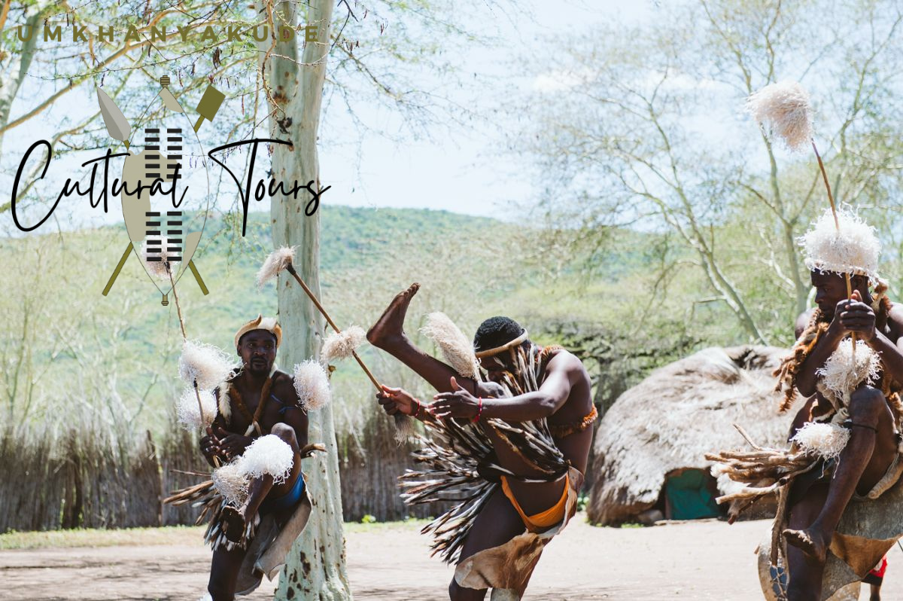
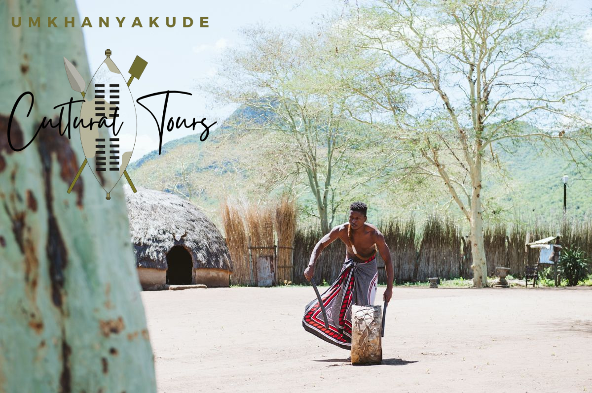
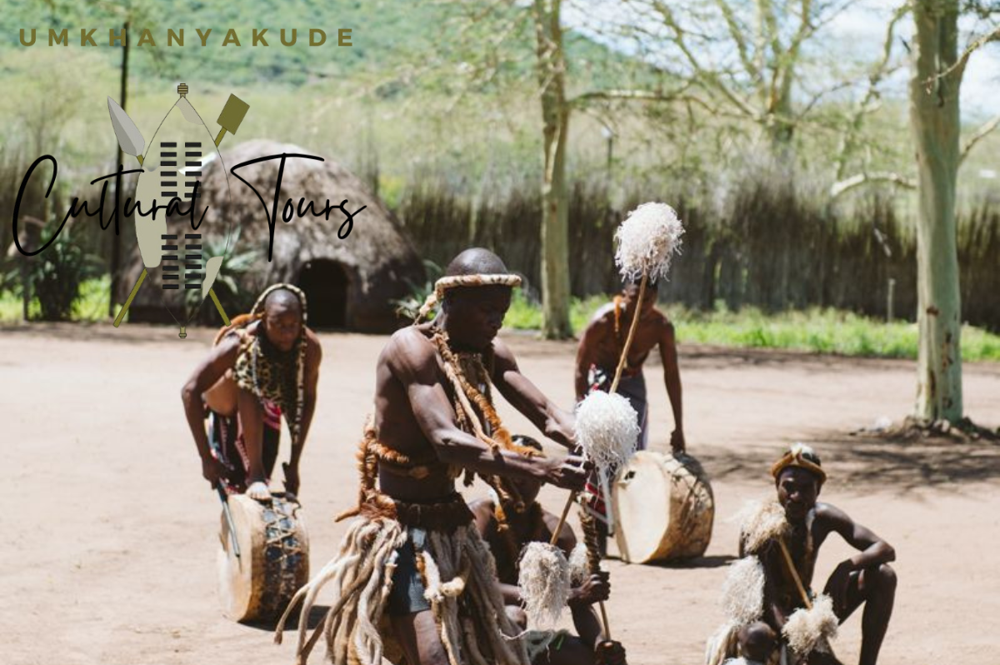

Welcome to Umkhanyakude Cultural Tours! We offer unique and educational Zulu cultural experiences in the heart of KwaZulu-Natal.
Join us for traditional dancing, storytelling, village life, and authentic local hospitality.
Zulu Cultural Experience Gallery






Our Experiences
Please Note: All bookings must be made at least one day in advance to ensure availability and preparation.
Ghost Mountain Hike
Price: R499 pp (Group prices negotiable)
Duration: 2–3 hours | Distance: 8–10 km | Difficulty: Moderate–Challenging